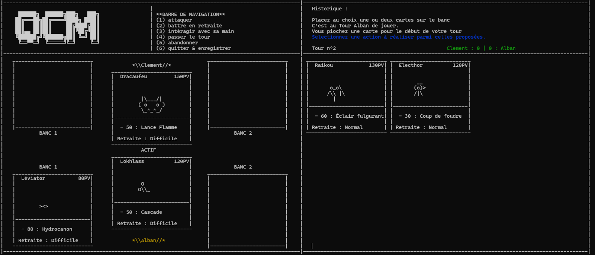
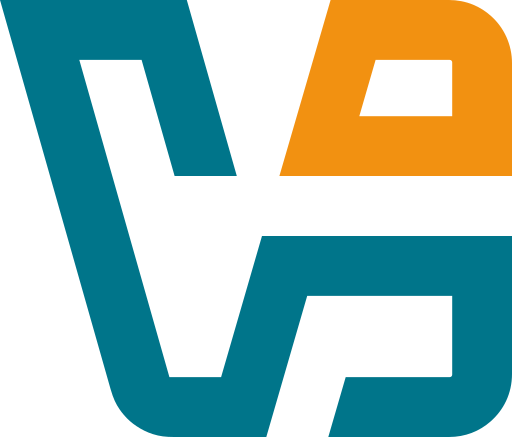
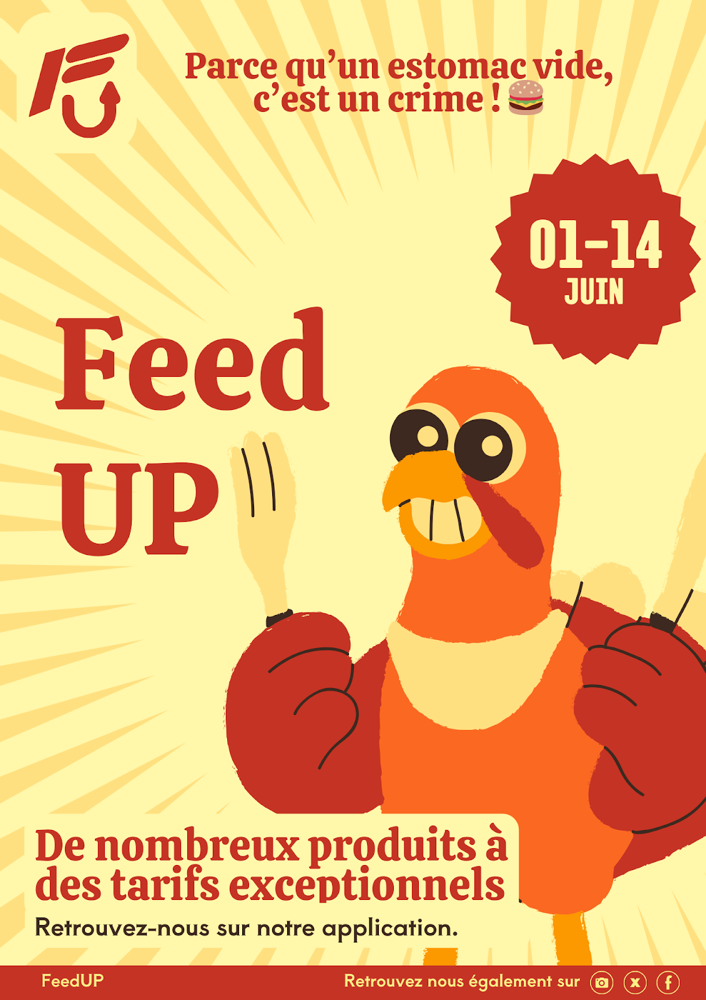

Alban Sonneville
Étudiant en BUT Informatique
Passionné par le réseau, la programmation et plus largement les nouvelles technologies,
j'aime concevoir des projets concrets et développer sans cesse mes compétences techniques.

Passionné par le réseau, la programmation et plus largement les nouvelles technologies,
j'aime concevoir des projets concrets et développer sans cesse mes compétences techniques.
Je m'appelle Alban Sonneville, actuellement en deuxième année de BUT Informatique à l'Université de Lille. Curieux et passionné par les nouvelles technologies, j'aime explorer les domaines du réseau et de la programmation. Ce qui me motive avant tout, c'est de concevoir des projets concrets, d'expérimenter et d'apprendre en donnant vie à mes idées.
Le BUT Informatique est pour moi une formation très enrichissante, qui m'apporte des bases solides en développement, administration système et gestion de projets. Grâce à cet équilibre entre théorie et pratique, j'acquiers une vision globale du monde informatique, tout en développant des compétences techniques polyvalentes.

Jeu de cartes au tour par tour affiché dans le terminal. Les attaques reposent sur des QCM adaptés au niveau scolaire du joueur, afin de garder un équilibre entre apprentissage et gameplay.

Site web fictif pour une entreprise, permettant aux employés de partager des trajets. Comprend une page d'accueil, une page de recherche, une page de connexion et une page d'aide.

Application JavaFX permettant d'importer des adolescents depuis un fichier CSV, de gérer les rôles hôte/visiteur et de former des paires selon un score d'affinité.

Mise en place d'une machine virtuelle Debian 64 bits avec VirtualBox afin de configurer un environnement de développement.

Création du concept Feed Up, une application mobile de commande et de livraison, avec une étude du secteur, de la concurrence, de la cible et des obstacles possibles.

Deux projets de création de base de données : une BDD pour une société d'aide à domicile, et une analyse des données des Jeux Olympiques via SQL et graphiques.
Jeu développé en JavaFX mettant en œuvre différents algorithmes de génération de labyrinthes, un mode histoire progressif, un système de profils utilisateurs et une interface inspirée de l'univers Star Wars.
Outil CLI en Bash pour déployer et administrer une infrastructure SaaS multi-clients basée sur Dolibarr, avec conteneurs Docker, reverse proxy Traefik et base PostgreSQL.
dolib-saas fonctionnel avec commandes init, createuser, deleteuser, show, start et down. Chaque client dispose d'une instance Dolibarr isolée, accessible via une URL dédiée (nomclient.machine.iutinfo.fr). Documentation man-page incluse.